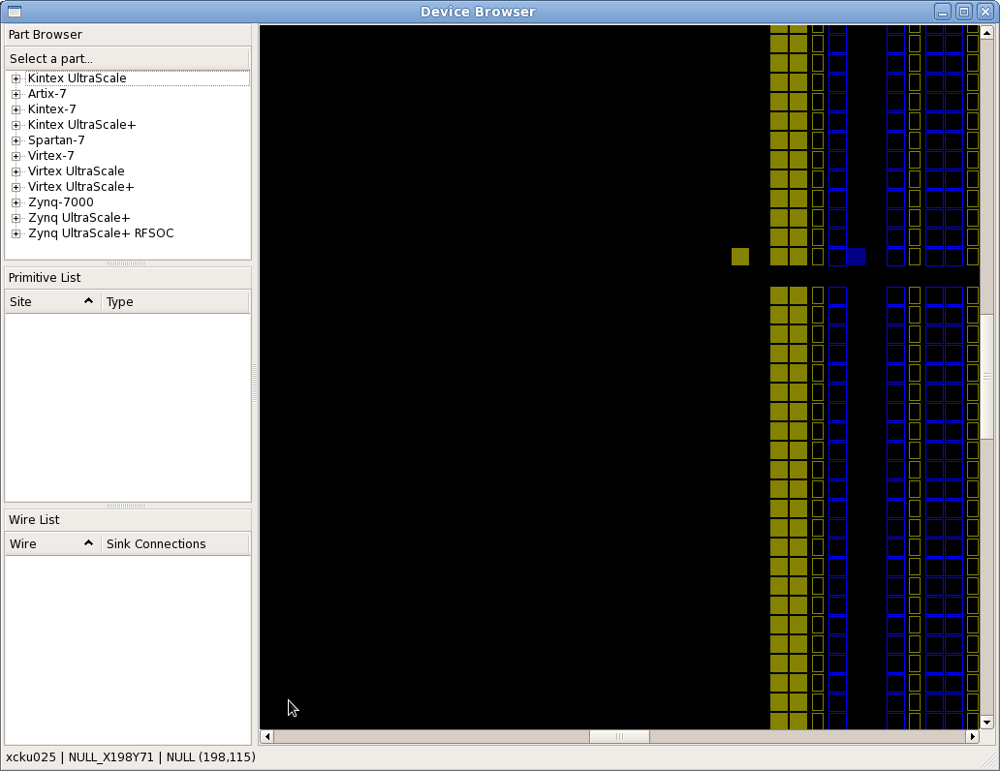

Install¶
TL;DR¶
git clone https://github.com/Xilinx/RapidWright.git
cd RapidWright
./gradlew compileJava
export PATH=`pwd`/bin:$PATH
What You Need to Get Started¶
Java (1.8 minimum, 11 or later recommended) - Any distribution such as Adoptium should work. If you already have Vivado, it includes Java, see Using Java distributed with Vivado below on how to use it.
Git (source revision control system)
If you are running Linux and want to run the GUI portion of RapidWright, you may need an older libpng12 library. For those running Debian/Ubuntu-based distros, try the following:
wget -O /tmp/libpng12.deb https://snapshot.debian.org/archive/debian/20160413T160058Z/pool/main/libp/libpng/libpng12-0_1.2.54-6_amd64.deb && sudo dpkg -i /tmp/libpng12.deb && rm /tmp/libpng12.deb
For CentOS/RedHat/Fedora distros, try the following:
sudo yum install libpng12
Additional Recommendations¶
Vivado Design Suite 2018.3 or later (Not essential to run RapidWright, but makes it useful)
RapidWright includes the Gradle Wrapper (automatic build tool), so a Gradle installation is not necessary.
Install Steps¶
The easiest way to get RapidWright setup is to simply run these commands:
Linux ( /bin/sh or compatible):
git clone https://github.com/Xilinx/RapidWright.git
cd RapidWright
./gradlew compileJava
export PATH=`pwd`/bin:$PATH
Note
C-style shells (csh or tcsh) should replace the last line with setenv PATH `pwd`/bin:$PATH
Windows ( cmd.exe ):
git clone https://github.com/Xilinx/RapidWright.git
cd RapidWright
.\gradlew compileJava
set "PATH=%CD%\bin;%PATH%"
Note
For Windows Powershell users, replace the last line with $env:PATH="$pwd\bin;$env:PATH"
This will clone a copy of RapidWright from GitHub, download jar
dependencies, compile the Java code and add the rapidwright wrapper to your PATH. Checking out and compiling
the code can also be accomplished by using an IDE (see
RapidWright Eclipse Setup or RapidWright IntelliJ Setup).
To perform a quick test to ensure RapidWright is setup correctly, try running the following:
rapidwright DeviceBrowser
Note
If you prefer to run with java directly (you’ll need to set the CLASSPATH appropriately, see CLASSPATH below for details), the same tool can be invoked with: java com.xilinx.rapidwright.device.browser.DeviceBrowser
You should see the GUI come up similar to this screenshot:
{kind=link}
If you have gotten to this point, congrats! Your RapidWright install is correctly configured and you are ready to start experimenting.
RapidWright Wrapper¶
Some may be new to Java so RapidWright has included a rapidwright
wrapper script (rapidwright.bat for Windows users) that manages
setting the Java class path and provides a handy interface to the
various use modes. The directions above add the wrapper to the
PATH.
The rapidwright wrapper has the following options (printed when run without parameters):
rapidwright com.xilinx.rapidwright.<ClassName> -- to execute main() method of Java class
rapidwright <application> -- to execute a specific application
rapidwright --list-apps -- to list all available applications
rapidwright jython -- to enter interactive Jython shell
rapidwright jython -c "..." -- to execute specific Jython command
To pass options to java, it is recommended to use the _JAVA_OPTIONS environment
variable, for example:
_JAVA_OPTIONS=-Xmx32736m rapidwright RWRoute
This will set the Java Virtual Machine (JVM) upper heap memory limit to ~32GBs. This limit is useful as it is the largest heap size available by default without causing all references to expand from 4 bytes to 8 bytes.
Vivado Compatibility & Versioning¶
RapidWright aims to be as compatible as possible with Vivado in terms of the device models it offers and its ability to load design checkpoints (DCPs) as far back as 2018.2.
RapidWright versioning intends to indicate to the user what the latest version of Vivado for which it will be compatible. For example, RapidWright 2023.1.0 will be compatible with Vivado 2023.1 and previous versions back to 2018.2. Conversely, a DCP created in Vivado 2023.1 will likely not be readable in previous versions of RapidWright (2022.2.0, 2022.1.0, etc). This also is true for device models. If a device is released in Vivado 2023.1, it won’t be available in previous versions of RapidWright.
Notes for Advanced/Legacy Users:¶
Using Java distributed with Vivado¶
The easiest way to find out where the Java runtime is packaged with your installation of Vivado, is to run the following at the Vivado Tcl prompt:
which java
Based on where your installed Vivado is located, it should produce a full path, something like this:
/opt/Vivado/2022.2/tps/lnx64/jre11.0.11_9/bin/java
To use this version of Java instead of the system Java or installing
it, simply update your PATH and JAVA_HOME environment variables:
export PATH=/opt/Vivado/2022.2/tps/lnx64/jre11.0.11_9/bin:$PATH
export JAVA_HOME=/opt/Vivado/2022.2/tps/lnx64/jre11.0.11_9
Or, if using Windows, search for “edit environment variables”
and add a new entry for PATH and JAVA_HOME appropriately.
CLASSPATH¶
Java has the notion of a CLASSPATH, this is a list of locations where
java can look for compiled Java code (.class files or .jar
files) to execute at runtime. The CLASSPATH can be set on the command
line (java -cp <CLASSPATH_HERE>) or it can be set via the
environment variable CLASSPATH. If a script to set the CLASSPATH
variable (in Linux) is desired, the following command can be run:
echo "export CLASSPATH=`pwd`/bin:`pwd`/jars/*" > bin/rapidwright_classpath.sh
This sets up the environment so the -cp bin:jars/* classpath option doesn’t need to be set
as an argument when invoking java, for example:
source bin/rapidwright_classpath.sh
java com.xilinx.rapidwright.device.browser.DeviceBrowser
Should start the DeviceBrowser just as before.
RAPIDWRIGHT_PATH¶
The environment variable RAPIDWRIGHT_PATH is no longer required.
RapidWright data files have a default location (see
RapidWright Data Files). To override the default location, the
environment variable RAPIDWRIGHT_PATH can be set and the data files will be
placed in $RAPIDWRIGHT_PATH/data.
RapidWright Installer (Obsolete)¶
The RapidWright installer is no longer the preferred method of installation. Please use the steps above, it is included below for legacy purposes.
Download
rapidwright-installer.jar(or run command below in Linux) to the directory where you would like RapidWright to reside.
wget http://www.rapidwright.io/docs/_downloads/rapidwright-installer.jar
From a terminal in that directory, run (To open a terminal on Windows, search and run ‘cmd.exe’ from the Start orb):
java -jar rapidwright-installer.jar
Use one of the BASH/CSH/BAT scripts created at the end of the install to set the proper environment variables for subsequent invocations of RapidWright.
Setup your IDE (if applicable):
Once complete, you can run the DeviceBrowser within your respective IDE to test the installation.